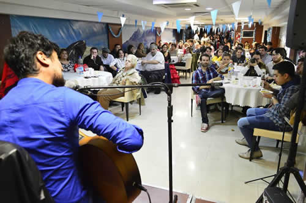

Real Chubut - Agencia de Noticias


Más de 400 chubutenses se reunieron en Buenos Aires para festejar el 25 de Mayo en una gran Peña Patria

Multitudinario evento organizado por la Casa del Chubut. Locro, bailes folclóricos, vestidos de época, sorteos y espectáculos artísticos y musicales de primer nivel congregaron a gente de diferentes localidades de la provincia que por diversas razones se encuentran circunstancialmente en la Capital Federal.
La Casa del Chubut fue escenario de un gran festejo que congregó a más de 400 personas de diferentes localidades de la provincia que por diversas razones se encuentran circunstancialmente en la Capital Federal, celebrando en la ocasión el 25 de Mayo con una gran Peña Patria que incluyó locro, bailes folclóricos, vestidos de época, sorteos y espectáculos artísticos y musicales de primer nivel.
La mayoría de los concurrentes fueron estudiantes chubutenses que están cursando sus carreras universitarias en Buenos Aires, pacientes derivados con sus acompañantes y jóvenes que colaboraron como voluntarios en la Casa del Chubut durante los últimos dos meses en la recepción, clasificación y carga de las donaciones que se enviaron a Comodoro Rivadavia en 16 camiones, tras el temporal que afectó a diferentes regiones de nuestra provincia.
LUGAR DE ENCUENTRO
El director general de la Casa del Chubut, Germán Sahagún, dijo que "estamos muy contentos porque una vez más ha venido mucha gente de distintas localidades de nuestra provincia a compartir un momento juntos acá en Buenos Aires en un día tan importante para los argentinos como el 25 de Mayo".
Agregó que "más que la Casa del Chubut esta es la Casa de los Chubutenses: siempre tenemos las puertas abiertas para recibir a la gente de nuestra provincia que vive en Capital Federal y sus zonas aledañas o bien ha tenido que trasladarse a Buenos Aires por razones de salud junto a familiares y personas cercanas".
El funcionario provincial señaló que "también es uno de nuestros objetivos aprovechar estos eventos para darle un espacio a artistas y emprendedores chubutenses para que exhiban sus obras y productos en la Capital Federal. Hoy por ejemplo hemos visto espectáculos musicales de primer nivel, con un acompañamiento muy importante por parte del público que participó muy activamente en cada una de las presentaciones".

Para finalizar, Sahagún indicó que "este locro y esta Peña Patria también nos sirvieron para agradecerles a los cientos de voluntarios y al personal de la Casa del Chubut que trabajaron a jornada completa durante dos meses recibiendo, clasificando y cargando las donaciones que se enviaron en 16 camiones a Comodoro Rivadavia para ayudar a la gente que sufrió las consecuencias del temporal. En su momento hicimos una convocatoria solidaria muy amplia y la respuesta de la gente fue extraordinaria, superando incluso nuestras propias expectativas", concluyó.
ARTISTAS Y PRODUCTORES CHUBUTENSES
Esta fue la segunda edición consecutiva de la Peña Patria que, al igual que el año pasado, logró congregar a una gran cantidad de chubutenses en Buenos Aires, a muchos kilómetros de sus hogares familiares, para compartir juntos esta celebración tan característica del pueblo argentino. La Casa del Chubut se ha convertido este último año en la Casa de los Chubutenses, generando un espacio de contención para la gente que muchas veces llega a la Capital Federal y necesita una ayuda y orientación porque tiene que transitar por una ciudad muy grande que en muchos casos se desconoce, enfrentando las dificultades típicas que se presentan en un conglomerado urbano de las dimensiones de Buenos Aires y sus zonas aledañas.
También los artistas chubutenses han encontrado en la representación provincial en Capital Federal un espacio de expresión para exhibir sus obras. Por eso durante el transcurso de esta gran Peña Patria del 25 de Mayo se presentaron en la Casa del Chubut el cantautor Yoel Hernández, oriundo de El Maitén; el grupo musical Manijas y Lino López (Coreografía y Baile Folclórico).
Además, la ambientación del lugar estuvo a cargo de un grupo de pacientes chubutenses derivados a Buenos Aires, y sus familiares que los asisten y acompañan. Algunos de ellos están participando del espacio "El Arte es Terapia", que organiza la Casa del Chubut junto a Seros, con el objetivo de generar un espacio de contención y encuentro en Capital Federal, uniendo a la gente de la provincia que se encuentra circunstancialmente en Buenos Aires por razones de salud, integrándolos a través de diferentes actividades artísticas y recreativas que se organizan semanalmente en el espacio que dispone el Área de Servicio Social de la representación del gobierno provincial en Capital Federal.
La Gran Peña Patria también generó un espacio para que emprendedores chubutenses exhiban sus productos ante el público presente. Así lo hicieron el trelewense Gianni Papini, con su proyecto McCoy Beer Truck de producción de cerveza; la comoderense Fernanda Peralta, del emprendimiento Besos de Chocolate; y Francisco Mastruzzo, de El Hoyo, con su producto cordillerano Cerveza Sheken.
PUBLICIDAD